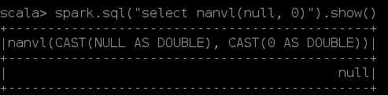

Column 的 isNaN 方法，和 Spark 的内置函数isnan(col:Column )
如果是 NaN 则返回 True，否则返回 False。
但是，这两个方法需要目标列是 DOUBLE 类型，如果不是 DOUBLE 类型会先进行强制转换。
NULL 不是 NaN，不是 NaN！！！
nanvl(col1: Column, col2: Column)，col1 为字符串且为NULL 时，返回结果是 NULL，竟然不是 col2；
/**
* Returns col1 if it is not NaN, or col2 if col1 is NaN.
*
* Both inputs should be floating point columns (DoubleType or FloatType).
*
* @group normal_funcs
* @since 1.5.0
*/
def nanvl(col1: Column, col2: Column): Column = withExpr { NaNvl(col1.expr, col2.expr) }
看函数的描述，两个参数都应该是浮点类型的列。
从 spark-shell 的执行结果来看，nanvl 会自动执行非浮点值到 Double 的强制转换，但是对于 NULL返回的结果是 NULL。

如果要达到 col1 为 NULL 时返回 col2 的目的，可以使用 coalesce(e: Column*) 函数，或者使用hive SQL的 NVL(col1,col2) 替换 nanvl。
split 函数——换行
文本里面包含换行，也会在换行处进行切分，不管切分的pattern是否是换行符。奇怪……hive、和spark sql都是这样……
json_tuple 返回值的类型
如果json_tuple(col, field)，col json字符串的 field 属性是一个字符串数组，json_tuple执行的结果类型是元组。select子句中改为json_tuple(col, field).as("fname")，fname的类型好像就成了string。但是使用regexp_replace(json_tuple(col, field), "asd", "")时，报错：
User class threw exception: org.apache.spark.sql.AnalysisException: cannot resolve 'regexp_replace(json_tuple(facet_logs_history.`eventcontent`, 'ctr'), '^\\[|]$|\\s', '')' due to data type mismatch: argument 1 requires string type, however, 'json_tuple(facet_logs_history.`eventcontent`, 'ctr')' is of array<struct<c0:string>> type
Spark将其识别为数组 array<struct<c0:string>>。是Spark对类型进行了隐式转换吗？
concat_ws
如果分隔符为 NULL 返回 NULL，值（array\map）中的 NULL 元素会被忽略
collect_set、collect_list
如果分组元素都是 null，它们返回的结果是空的集合，而不是 null。
函数的 docs 表述中——这两个函数的结果不是确定的：
The function is non-deterministic because the order of collected results depends on order of rows which may be non-deterministic after a shuffle.
但是实际在使用过程中，结合 repartition('col).sort('order) 可以获得确定的有序的结果集。不知道是否是因为 repartition sort 导致混洗成为了确定的。
如果要获取有序的结果，通过 array_srot 函数对 collect 结果进行排序是确定可以的，否则需要慎重。
在spark-shell 进行测试：
val df = spark.createDataset(Seq(("a","x",1),("a","y",2),("a","z",0),("b","x",1))).toDF("c1", "c2", "c3")
/*每次结果都相同*/
// 没有分区
df.select('c1, 'c2, 'c3, concat_ws(",", collect_list('c2).over(Window.orderBy('c3.desc))).as("read_item_list")).show(false)
// 分区，collect 的结果是——起始边界至当前行
df.select('c1, 'c2, 'c3, concat_ws(",", collect_list('c2).over(Window.partitionBy('c1).orderBy('c3.desc))).as("read_item_list")).show(false)
// 分区，设置边界为整个分区，collect 的结果是——整个分区
df.select('c1, 'c2, 'c3, concat_ws(",", collect_list('c2).over(Window.partitionBy('c1).orderBy('c3.desc).rowsBetween(Window.unboundedPreceding, Window.unboundedFollowing))).as("read_item_list")).show(false)
// repartition sort 之后，再进行 group，结果不确定。（即使只有一个分区）collect_list 结果也不确定（不一定是按 sort 表达式排序）
df.repartition(1, 'c1).sort('c3.desc).groupBy('c1).agg(concat_ws(",", collect_list('c2)).as("read_item_list")).show(false)
如果函数的返回结果不是一个单纯的列，那么不能对函数结果直接进行解析等操作
否则会报错 ：
Generators are not supported when it's nested in expressions
如下代码会报错，因为 json_tuple 返回的不是单纯的一列，可能是多列：
df.select(
from_json(
json_tuple('value.cast("string"), "data").as("data"),
msgDataSchema
).as("data")
)
具体报错为：
org.apache.spark.sql.AnalysisException: Generators are not supported when it's nested in expressions, but got: jsontostructs(json_tuple(CAST(value AS STRING), data
) AS `data`);
多一层select处理后就可以正常执行了：
df.select(json_tuple('value.cast("string"), "data").as("data"))
.select(from_json('data, msgDataSchema).as("data"))
类似 json_tuple，explode 也可能引发这个错。
可以使用 from_json 解析 json 字符串 {k1:v1,k2:v2,k11:v11,k3:v3,...} 为 map
from_json 无法直接解析 MapType 类型数据。需要将其转化为 StructType。
df.select('device_id,
explode(
from_json(
concat(lit("{\"k\":"), 'kws, lit("}")),
StructType(Seq(StructField("k", MapType(StringType, DoubleType))))
).getField("k")
)
)
解析后通过 getField("k") 即可将字符串读取为 MapType 的列。通过 explode 函数，便可以将 map 解析为名为 key 和 value 的两列数据。
explode 函数在遇到 NULL 值得时候，会将其过滤掉。
如果想要保留 NULL 值对应的记录，可以使用函数 explode_outer。
split 函数是使用正则表达式 pattern 进行字符串切分的
所以要注意正则表达式特殊字符的转义，否则可能会有意想不到的的错误发生。
比如，split(str, '.')，应该使用转义 split(str, '\\.')
df.withColumn("a", lit(1)).withColumn("b", lit("-1")).groupBy('a, 'b).agg(...) 期望返回的是一条数据，但是结果竟然是两条数据
其中 a、b 分组值都是相同的—— (1,"-1")。奇怪的是，使用 df.cube('a, 'b).agg(...) 结果就不会有重复的两条数据。相当诡异！！！！
map_from_entries() 函数的用法
scala> spark.createDataset(Seq(("a",1, 0), ("b", 2, 0))).toDF("x", "y", "z").select(struct('x, 'y).as("v"), 'z).groupBy('z).agg(map_from_entries(collect_list('v)).as("res")).show(false)
+---+----------------+
|z |res |
+---+----------------+
|0 |[b -> 2, a -> 1]|
+---+----------------+
df.coalesce(n) ，如果df 是 shuffle 之后产生的结果，直接调用 df.coalesce(n) 且 n 比较小会导致 shuffle 的 partitions 个数减少，进而影响计算 df 的并行度，可能会降低程序执行效率。
/**
* Returns a new Dataset that has exactly `numPartitions` partitions, when the fewer partitions
* are requested. If a larger number of partitions is requested, it will stay at the current
* number of partitions. Similar to coalesce defined on an `RDD`, this operation results in
* a narrow dependency, e.g. if you go from 1000 partitions to 100 partitions, there will not
* be a shuffle, instead each of the 100 new partitions will claim 10 of the current partitions.
*
* However, if you're doing a drastic coalesce, e.g. to numPartitions = 1,
* this may result in your computation taking place on fewer nodes than
* you like (e.g. one node in the case of numPartitions = 1). To avoid this,
* you can call repartition. This will add a shuffle step, but means the
* current upstream partitions will be executed in parallel (per whatever
* the current partitioning is).
*
* @group typedrel
* @since 1.6.0
*/
def coalesce(numPartitions: Int): Dataset[T] = withTypedPlan {
Repartition(numPartitions, shuffle = false, logicalPlan)
}
根据函数的描述：1、只能用于减少分区；2、窄依赖，不会有混洗，只是简单的进行分区合并。
但是，如果用来进行剧烈的合并（比如，合并为 1 个分区），可能会导致运算只在很少的节点上（比如， 1 个）运行。为了避免这种情况，可以使用 repartition() 函数来替换——它会增加一个混洗的步骤，但是也意味着此前的上游分区会并行的执行。
透视/行转列——pivot() 函数、逆透视/列转行（unpivot）——stack() 函数
透视例子：
# 源表
+---------+-------+---------------+
| Project| Name|Cost_To_Project|
+---------+-------+---------------+
|Ingestion| Jerry| 1000|
|Ingestion| Arya| 2000|
|Ingestion| Emily| 3000|
| ML| Riley| 9000|
| ML|Patrick| 1000|
| ML| Mickey| 8000|
|Analytics| Donald| 1000|
|Ingestion| John| 1000|
|Analytics| Emily| 8000|
|Analytics| Arya| 10000|
| BI| Mickey| 12000|
| BI| Martin| 5000|
+---------+-------+---------------+
# 转换为如下形式（按 Name 分组，求 Cost_To_Project 的和，并按 Project 进行“行转列”）：
+-------+---------+-----+---------+----+
| Name|Analytics| BI|Ingestion| ML|
+-------+---------+-----+---------+----+
| Mickey| null|12000| null|8000|
| Martin| null| 5000| null|null|
| Jerry| null| null| 1000|null|
| Riley| null| null| null|9000|
| Donald| 1000| null| null|null|
| John| null| null| 1000|null|
|Patrick| null| null| null|1000|
| Emily| 8000| null| 3000|null|
| Arya| 10000| null| 2000|null|
+-------+---------+-----+---------+----+
使用 RelationalGroupedDataset.piovt() 函数实现：
import spark.implicits._
import org.apache.spark.sql.functions.sum
// 不指定需要透视的不同的值，比较低效（Spark 需要内部地先计算出不同的值）
df.groupBy('Name).pivot("Project").agg(sum('Cost_To_Project)).show(false)
// 指定需要透视的不同的值，比较高效
df.groupBy('Name).pivot("Project", Seq("Analytics", "BI", "Ingestion", "ML")).agg(sum('Cost_To_Project)).show(false)
逆透视例子：
# 源表
+-------+---------+-----+---------+----+
| Name|Analytics| BI|Ingestion| ML|
+-------+---------+-----+---------+----+
| Mickey| null|12000| null|8000|
| Martin| null| 5000| null|null|
| Jerry| null| null| 1000|null|
| Riley| null| null| null|9000|
| Donald| 1000| null| null|null|
| John| null| null| 1000|null|
|Patrick| null| null| null|1000|
| Emily| 8000| null| 3000|null|
| Arya| 10000| null| 2000|null|
+-------+---------+-----+---------+----+
# 将源表转换（列转行\逆透视）为如下形式
+-------+---------+---------------+
| Name| Project|Cost_To_Project|
+-------+---------+---------------+
| Mickey| BI| 12000|
| Mickey| ML| 8000|
| Martin| BI| 5000|
| Jerry|Ingestion| 1000|
| Riley| ML| 9000|
| Donald|Analytics| 1000|
| John|Ingestion| 1000|
|Patrick| ML| 1000|
| Emily|Analytics| 8000|
| Emily|Ingestion| 3000|
| Arya|Analytics| 10000|
| Arya|Ingestion| 2000|
+-------+---------+---------------+
Spark 没有提供 unpivot 函数（org.apache.spark.sql.catalyst.analysis.FunctionRegistry 中有所有可用的函数表达式）。但是，有 stack 函数：
+-----------------------------------------------------------------------------------+
|function_desc |
+-----------------------------------------------------------------------------------+
|Function: stack |
|Class: org.apache.spark.sql.catalyst.expressions.Stack |
|Usage: stack(n, expr1, ..., exprk) - Separates `expr1`, ..., `exprk` into `n` rows.|
+-----------------------------------------------------------------------------------+
使用 stack 函数可以实现相同的功能：
df1.selectExpr("Name",
"stack(4, 'Analytics', Analytics, 'BI', BI, 'Ingestion', Ingestion, 'ML', ML) as (Project, Cost_To_Project)")
.filter('Cost_To_Project.isNotNull).show(false)